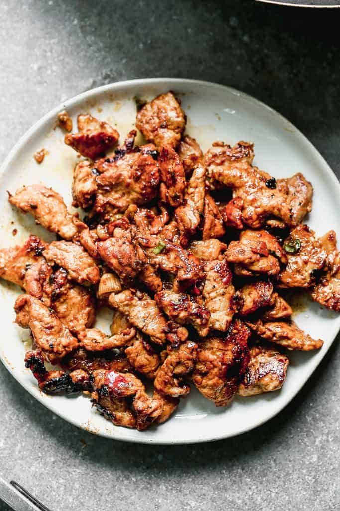

Bulgogi

Description
The word Bulgogi literally means “fire meat”. It’s absolutely delicious and, because its sliced so thin, it marinates and cooks quickly. It’s traditionally grilled on skewers but I love this quick and easy pan-fried version, for convenience.
Ingredients
- 1 pound pork tenderloin , or beef flank steak
- ¼ cup low-sodium soy sauce
- 1 Tablespoon sesame oil
- 1 Tablespoon light brown sugar
- 3 cloves garlic , minced
- 1 Tablespoon freshly grated ginger , or 2 tsp dry ground ginger
- 2-3 teaspoons Korean chili paste (gochujang) , or substitute Thai red chili sauce, sriracha, or crushed red pepper flakes, to taste
- 2 green onions , chopped, divided
- 2 Tablespoons oil (vegetable or canola) , for cooking meat
Instructions
- Slice the pork tenderloin into very thin slices and place the meat in a large ziplock bag. Set aside.
- In a bowl whisk together the soy sauce, sesame oil, brown sugar, garlic, ginger, red pepper flakes and one chopped green onion (reserve the remaining chopped green onion for garnish on the bowls).
- Pour the marinade into the bag with the pork and allow to marinate in the fridge for at least 30 minutes, or overnight.
- When ready to cook the pork, add 1 tablespoon of the vegetable oil to a large wok or skillet over medium high heat.
- Once hot, add half of the meat, placing it in a single layer in the pan. Allow it to brown for a few minutes, without touching it.
- Flip each piece of meat to the other side and allow to brown for another 2 minutes or so, until cooked through, but not overcooked. Remove to a plate.
- Add remaining oil to the pan. Once hot, add remaining pork and cook in the same manner. Remove to a plate.